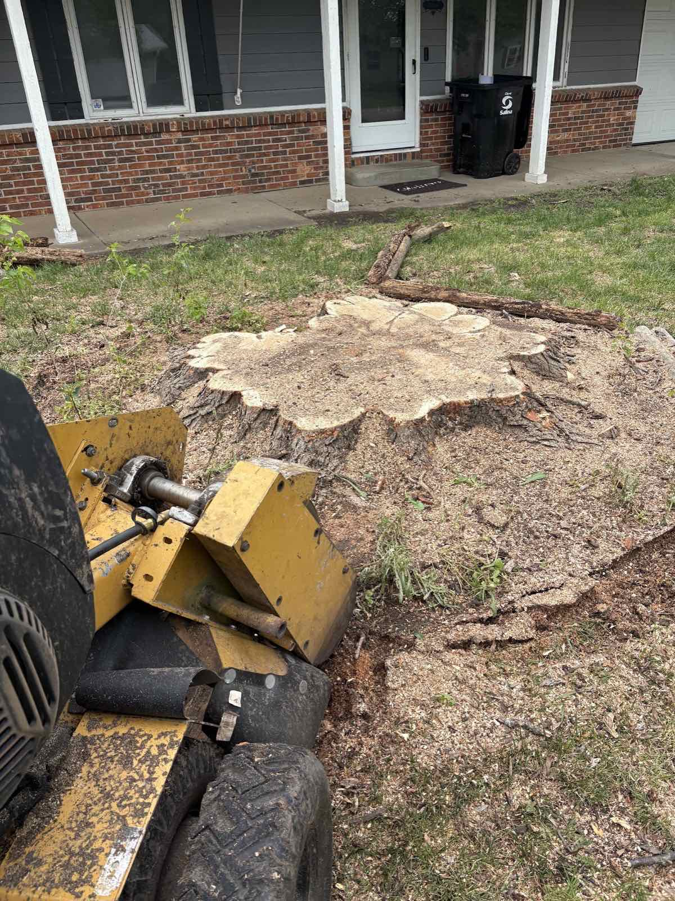
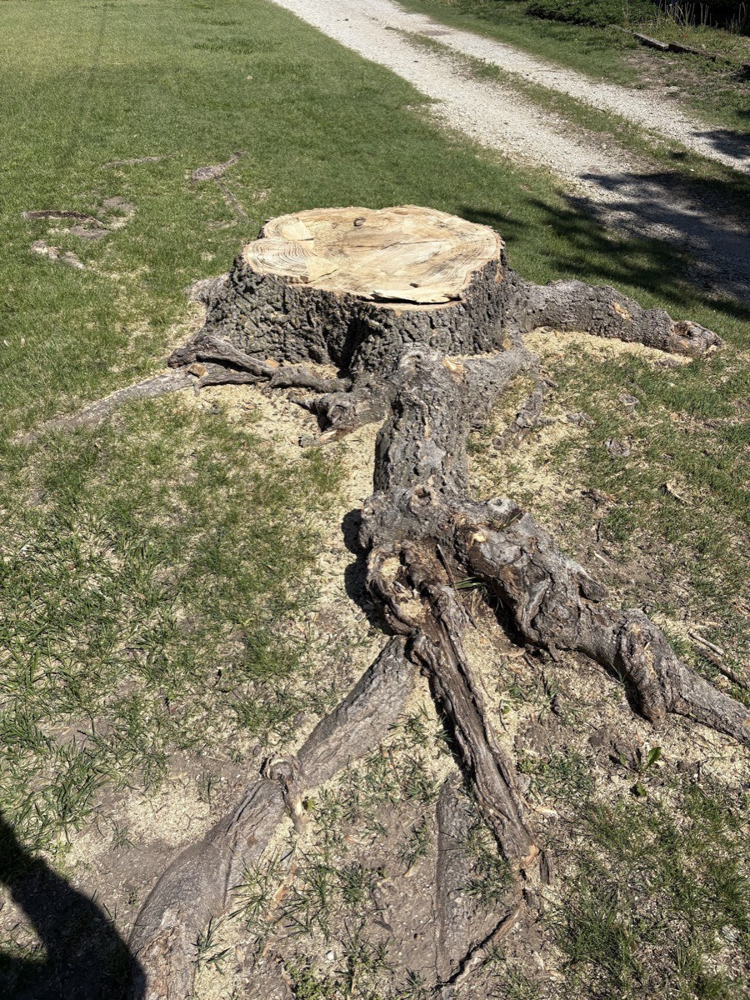
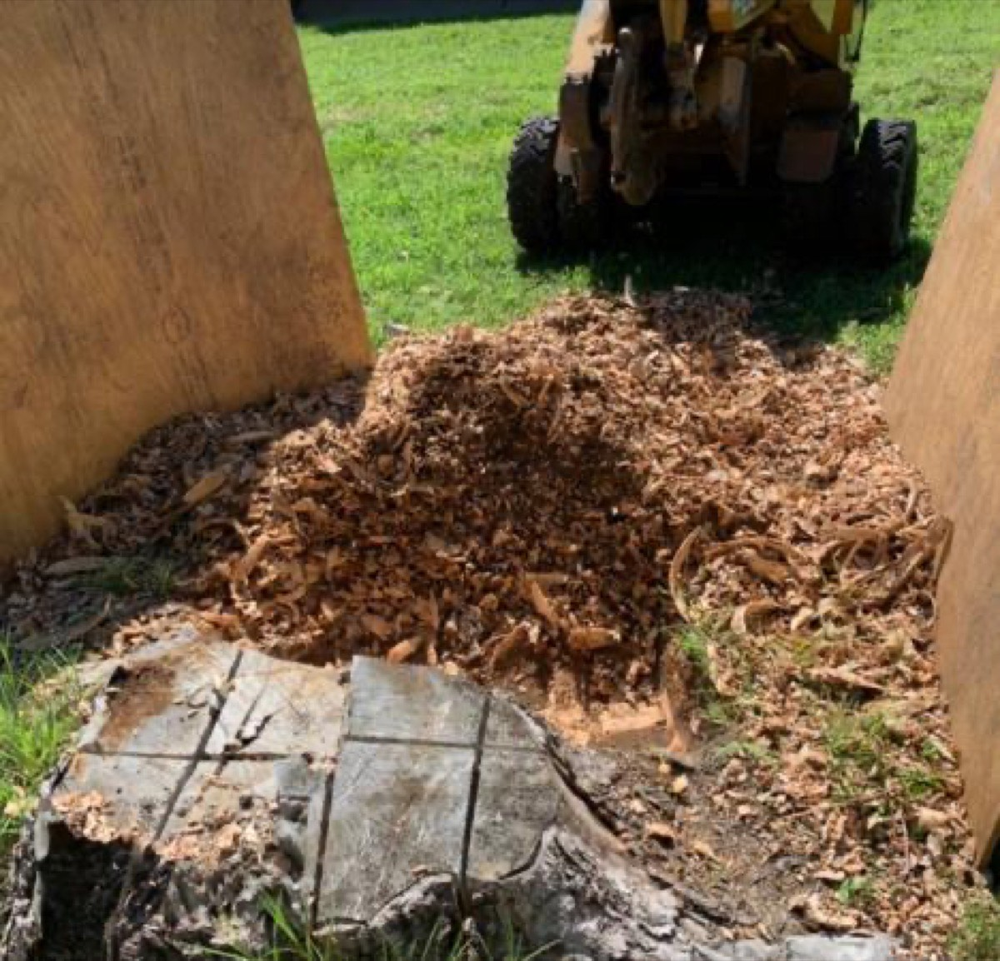
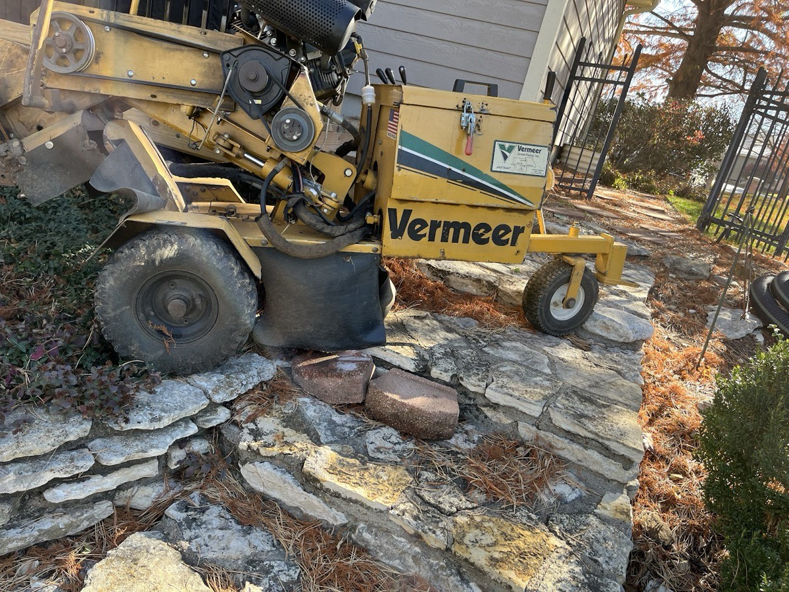
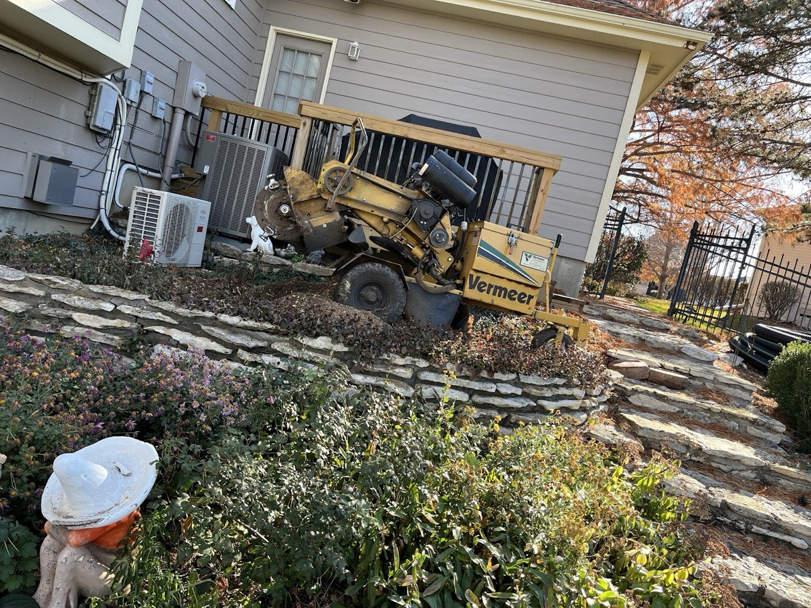
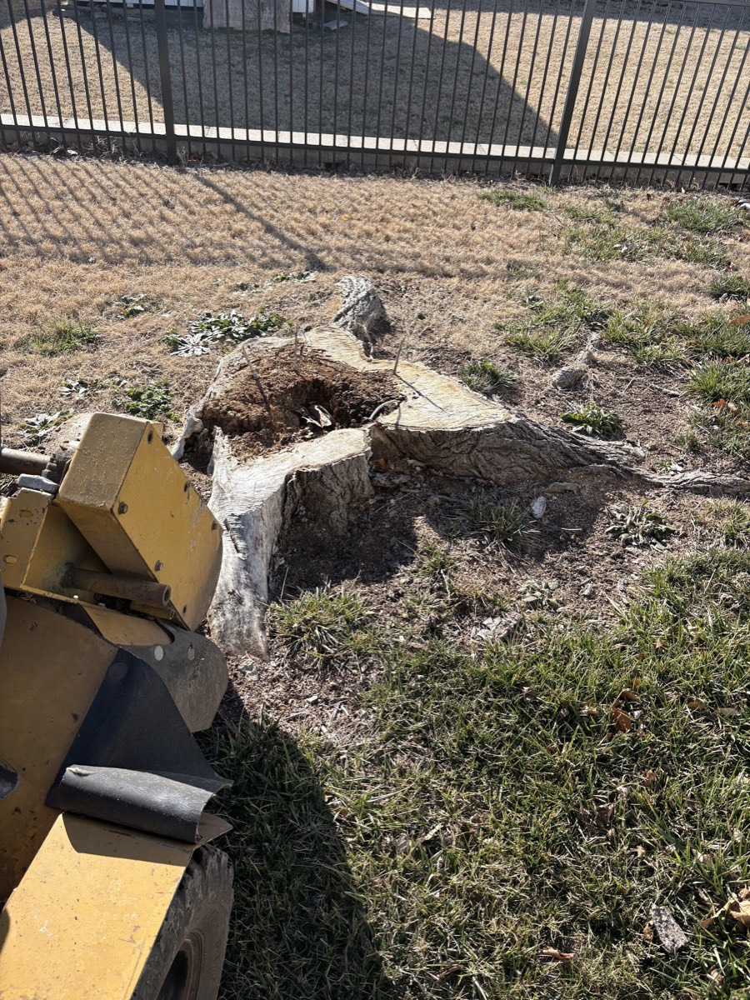
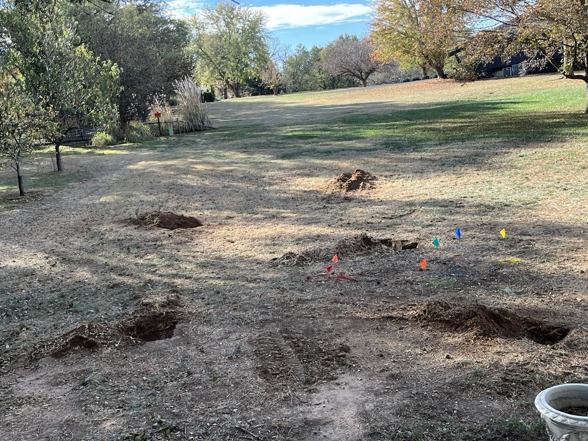

Stump Grinding
We grind the stump down well below grade so it's gone for good — no chemicals, no waiting months for it to rot. Most single stumps are finished the same visit.
You've been meaning to call somebody about it. Call Jack. We grind the stump out, fill the hole back in with dirt, and leave your yard clean — fast, fairly priced, and done right.

Jack's Stump Be Gone is built around one thing and does it well: getting that stump out of your yard so you can mow over it, plant in it, or just stop looking at it.
We grind the stump down well below grade so it's gone for good — no chemicals, no waiting months for it to rot. Most single stumps are finished the same visit.
Big, old, or wide-rooted? Our Vermeer grinder handles the stumps other guys won't touch — including the one you've been putting off for years.
We don't leave a crater. The hole gets filled back in with dirt and the grindings cleaned up, so your lawn is ready to seed or sod where the stump used to be.
Clearing several stumps, a fence line, or a whole lot? We'll walk it with you, give one honest price, and knock them out in a single trip.
Stump up against the house, a deck, a flower bed, or a stone wall? Our equipment fits through gates and works carefully around what you want to keep.
Send a photo or have Jack swing by — often the same day you call. You get a clear, reasonable price up front, with no obligation.
Customers tell us the stump they'd put off for years was gone within a couple of days of calling.
An honest estimate before any work starts — reviewers call the prices "very reasonable," with no surprises.
We work around decks, fences, and beds, fill the hole back in, and leave the area tidy when we're done.
Weather happens. Jack keeps you posted and shows up as soon as it clears — you're never left wondering.
Reach Jack at (785) 577-9130, or send a quick photo of the stump and your address.
You get a clear, fair price — often the same day, sometimes on the spot.
The stump comes out below grade, roots and all, with the equipment for the job.
Hole filled back in, grindings cleaned up, yard ready to use again.
Every photo here is from an actual Jack's Stump Be Gone job around Salina — before, during, and the clean yard after.






"I had a stump in my backyard for about two years and kept telling myself I just needed to call somebody to get it removed. Finally, I gave Jack a call and within a couple of days the stump was gone!"
"Jack was able to remove a very large stump from my yard and fill it back in with dirt in a matter of hours. He was very willing to work around my schedule."
"Jack is a very nice and impressive young professional. I called him for an estimate and he was over the same day with a very reasonable price."
Based right here in Salina, Kansas. If you've got a stump within a short drive, give us a call — we cover Salina and the surrounding Saline County communities.
Often the same day for an estimate, and many single stumps are ground out within a day or two of your call — weather permitting.
Yes. We fill the hole back in with dirt and clean up the grindings, so the spot is ready to seed, sod, or plant.
It depends on the size, number, and access of the stumps. That's why the estimate is free and honest — you'll know the price before any work begins.
Usually, yes. Our equipment fits through gates and works carefully around decks, fences, beds, and walls — just point out what you want protected.
We grind well below grade so the stump won't resprout and you can mow right over the spot once it's filled.
Call or text Jack at (785) 577-9130, or send a photo of the stump and your address for a quick estimate.
Tell Jack about your stump and you'll get a fair, no-pressure price — often the same day you reach out.
(785) 577-9130Call or text · Salina & Saline County, KS